Nanbu, Tottori: things to do, food and stays
Nanbu · Tottori
Nanbu
Highlighted on the Tottori map.
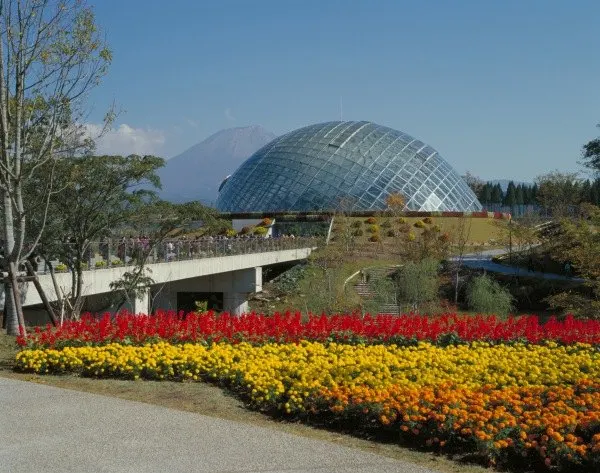
Stay
法勝寺温泉 別館
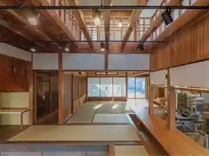
Hossho Tera Onsen Bekkan
Inn at Hosshotera Onsen in Hosshotera, Nanbu.
湖畔の宿 緑水園 虹の村コテージ（南部町バンガロー）
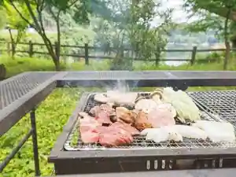
Kohan No Yado Ryokusui Sono Niji No Mura Cottage (Nanbu Machi Bangaro)
Cottages in Shimonakatani, Nanbu with lakeside location.
Dining
あっちゃん
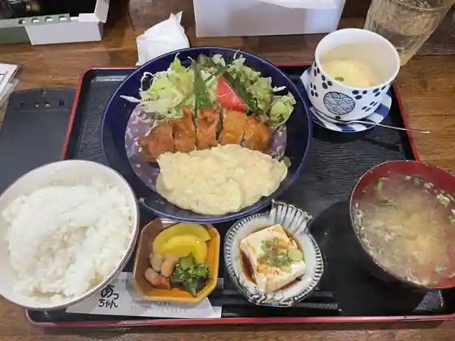
Atchan
そば処 門所
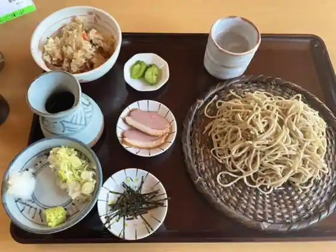
Soba Tokoro Mon Tokoro
ジェラテリア パッチェリービー
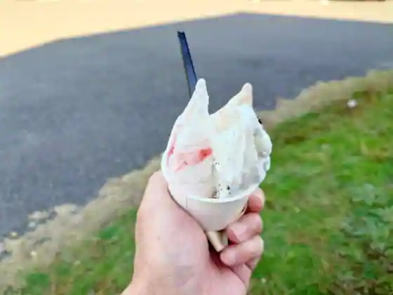
Jierateria Patchieribi
いとが
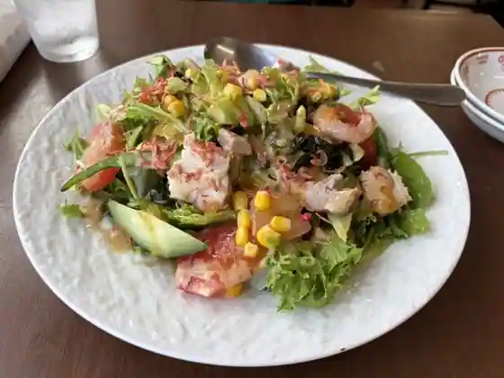
Itoga
とっとり花回廊 ソフトクリーム売店（フラワードーム）
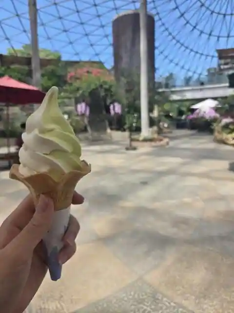
Tottori Hana Kairo Sofutokurimu Baiten (Furawadomu)
レストラン 花かいろう
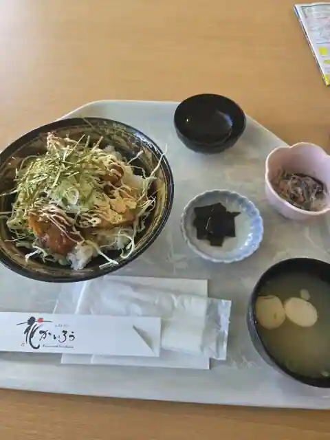
Restaurant Hana Kairo
緑水園
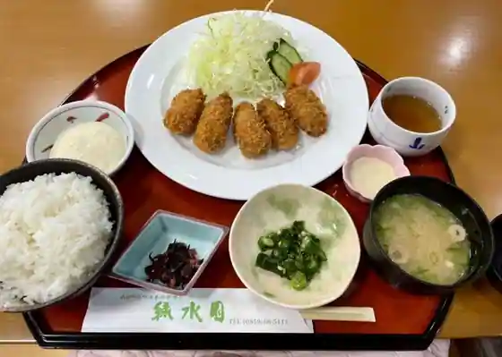
Ryokusui Sono
野楽里
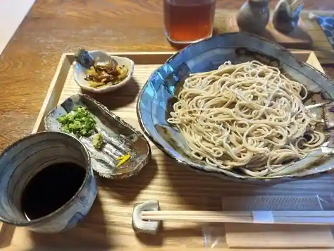
Norari
VASALLY HILLS BURGER
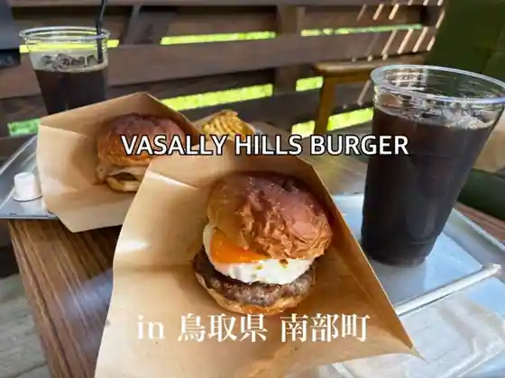
VASALLY HILLS BURGER
おちらと庵さえき
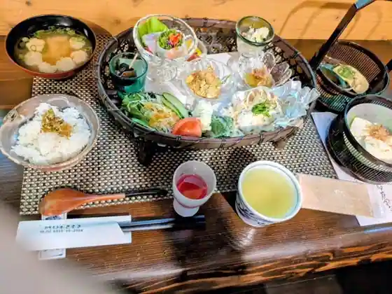
Ochirato Iori Saeki
カフェド穂のか
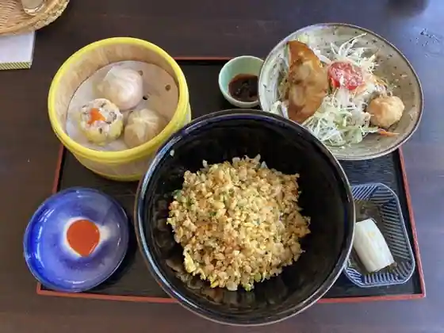
Cafe Do Ho Noka
やぶ勝
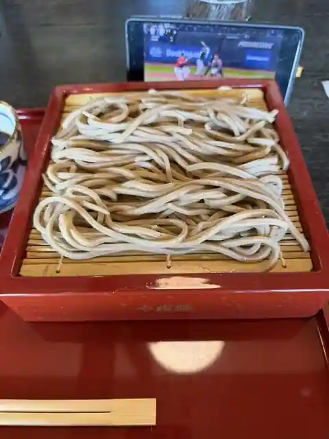
Yabu Kachi
とっとり花回廊 ソフトクリーム売店 西館
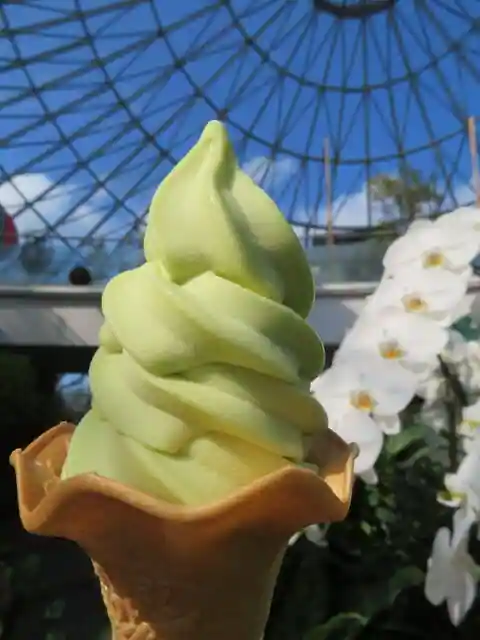
Tottori Hana Kairo Sofutokurimu Bai Nishikan
オアシス
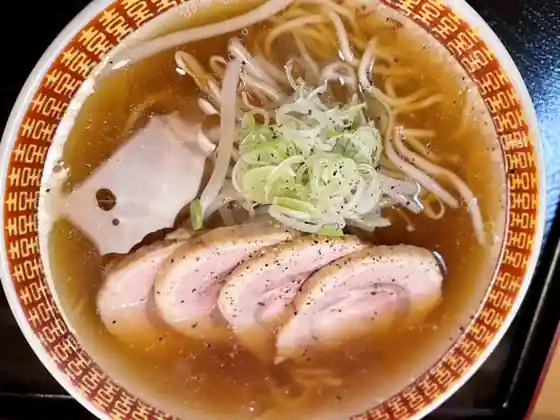
Oashisu
cafe Etsu
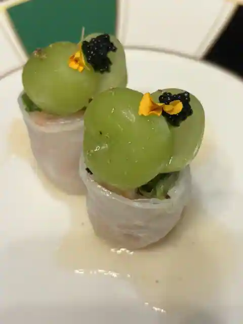
cafe Etsu
ペルテ
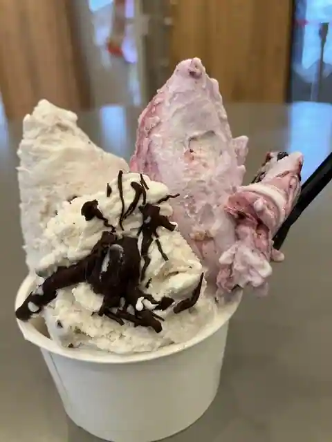
Perute
スコーンショップ Arrows one
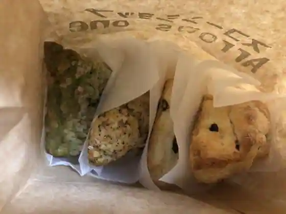
Sukonshoppu Arrows one
アロマカフェ
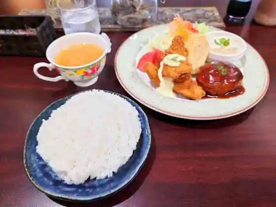
Aroma Cafe
グリンパーク大山ゴルフ倶楽部 レストラン
Gurin Park Oyama Gorufu Kurabu Restaurant
鎌倉山
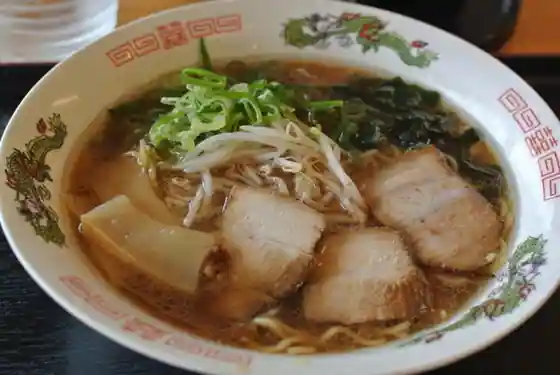
Kamakura Yama
ルポゼ
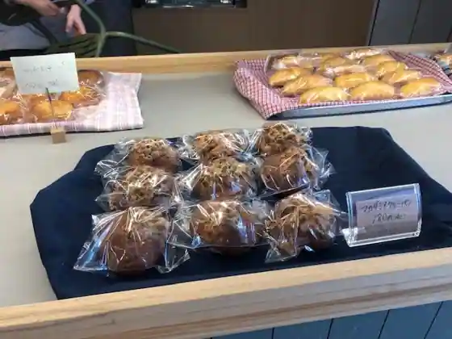
Rupoze
Sights
Tottori Hana Kairo
Hossho Tera Shiroyama Park Hossho Terakawa
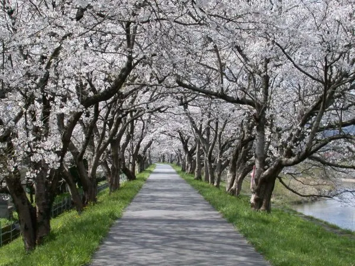
Aka Inoshishi Iwa Shrine
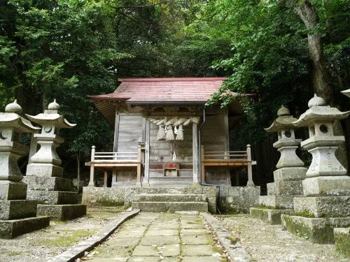
Tezukuri Soseji
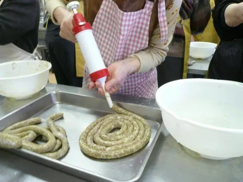
Yoshinari Deai no Kan
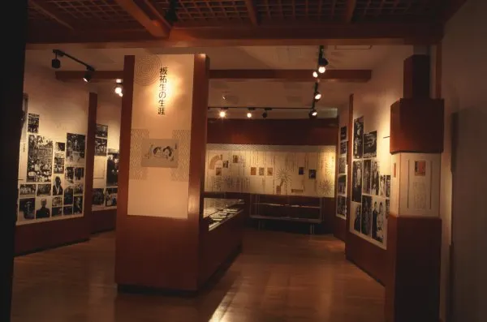
Tottori Hana Kairo Jiyu Sansaku, Fiirudobingo
Resutoran Hana Kairo
Jimoto no Tsuruya Kusabana Wotsukatta Saiku Experience
Nanbu Town Hall